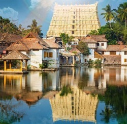
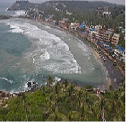
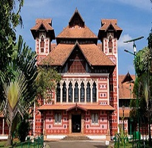

The Padmanabhaswamy temple is a Hindu temple located in Thiruvananthapuram, state capital of Kerala, India. The name of the city of Thiruvananthapuram in Malayalam translates to "The City of Lord Ananta", referring to the deity of the Padmanabhaswamy temple.
Read moreKovalam is a small coastal town in the southern Indian state of Kerala, south of Thiruvananthapuram. At the southern end of Lighthouse Beach is a striped lighthouse with a viewing platform. Palm-backed beaches also include Hawa Beach and Samudra Beach. Heading south, Vizhinjam Juma Masjid mosque overlooks the busy fishing harbor. Inland, Sagarika Marine Research Aquarium displays technology used in pearl production.
Read moreThe Napier Museum is an art and natural history museum.The museum was established in 1855.[3] In 1874, the old Museum Building was demolished and foundation for the new building was laid. The new building was named after Lord Napier, the Governor of Madras from 1866-1872.
Read more